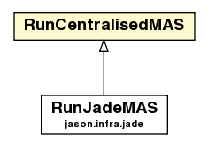

jason.infra.centralised
Class RunCentralisedMAS

java.lang.Object
 jason.infra.centralised.RunCentralisedMAS
jason.infra.centralised.RunCentralisedMAS
- Direct Known Subclasses:
- RunJadeMAS
public class RunCentralisedMAS
- extends java.lang.Object
Runs MASProject using centralised infrastructure.
| Methods inherited from class java.lang.Object |
clone, equals, finalize, getClass, hashCode, notify, notifyAll, toString, wait, wait, wait |
logPropFile
public static final java.lang.String logPropFile
- See Also:
- Constant Field Values
stopMASFileName
public static final java.lang.String stopMASFileName
- See Also:
- Constant Field Values
defaultProjectFileName
public static final java.lang.String defaultProjectFileName
- See Also:
- Constant Field Values
runner
protected static RunCentralisedMAS runner
btDebug
public javax.swing.JButton btDebug
RunCentralisedMAS
public RunCentralisedMAS()
main
public static void main(java.lang.String[] args)
init
public void init(java.lang.String[] args)
isDebug
public static boolean isDebug()
setupLogger
public static void setupLogger()
setupDefaultConsoleLogger
public static void setupDefaultConsoleLogger()
createButtons
protected void createButtons()
createPauseButton
protected void createPauseButton()
createStopButton
protected void createStopButton()
getRunner
public static RunCentralisedMAS getRunner()
getControllerInfraTier
public CentralisedExecutionControl getControllerInfraTier()
getEnvironmentInfraTier
public CentralisedEnvironment getEnvironmentInfraTier()
getProject
public MAS2JProject getProject()
createAgs
protected void createAgs(MAS2JProject project,
boolean debug)
throws JasonException
- Throws:
JasonException
addAg
public void addAg(CentralisedAgArch ag)
delAg
public CentralisedAgArch delAg(java.lang.String agName)
getAg
public CentralisedAgArch getAg(java.lang.String agName)
getAgs
protected java.util.Map<java.lang.String,CentralisedAgArch> getAgs()
startAgs
protected void startAgs()
stopAgs
protected void stopAgs()
startSyncMode
protected void startSyncMode()
waitEnd
protected void waitEnd()
finish
public void finish()